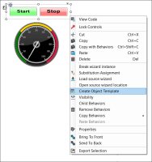
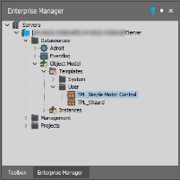
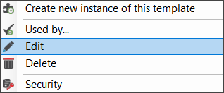
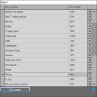
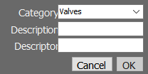
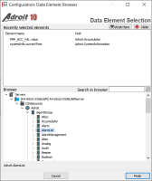
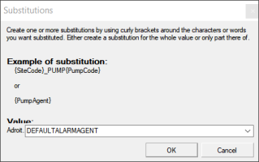
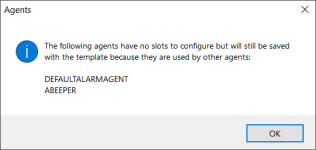
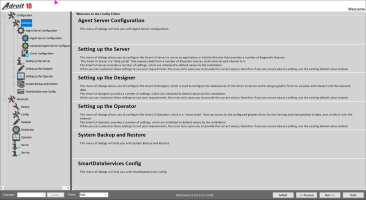

To start, use a wizard instance on a graphic form that you have already configured, which is working as required and is already configured with the necessary SCADA configuration (i.e. the scanning, logging, and alarming) plus any other agents that the object needs.
Important: Take the necessary time to test that the wizard has been correctly configured and is working optimally. Ensure that it can be scanned, logged and alarmed correctly. Be aware that any mistakes or omissions will be duplicated.
So, take care!
Tip: If you keep the identical substitution names as those you have used in the wizard, this makes it easier to implement your instances, as you will only need to configure these substitutions once. If you don’t use the same substitutions, you should specify unique substitutions during both the SCADA and Graphical Substitution stages.
Next, create a template from the wizard, which incorporates the graphical components of the wizard (and any substitutions that it uses), along with the SCADA configuration that you specify. Now, you can create numerous instances of each that will create unique tags and can be scanned, logged and alarmed, as specified by the template.
Best Practice: Always alarm agents from route 2 onwards never use routes 0 and 1. These routes are used internally by Adroit for reporting the system alarms and events.
Note: To create an object template, you need to be fully aware of how your SCADA system (Agent Server) is configured.
Once you have created an object template, and any other instances that you create using this template, the referenced wizard will provide the graphical components and uniquely configure the SCADA configuration for the process values that you have specified for each object.
Click on each of steps below to learn how to create an object template:

Select the required SmartUI Server in the Enterprise Manager tab, as follows:


The first step of the Edit Template configuration dialog is displayed:
Important: if you Cancel the configuration dialog then you will lose any configuration that you have done. However, you can use the Previous and Next buttons to navigate between the steps, which retain the current configuration of each step.
By default, the Template Name box uses the name of the selected wizard instance prefixed with "TPL_". You may change the name as required.


The Data Elements table should contain the valid names of the specified data elements used for the substitutable values of this primary wizard, so no further configuration should be required.
The Agent tree displays the list of Adroit tags directly referenced by the wizard.

You can use this step to assign portions of an agent name for substitution, or to be variable, when creating instances of this object. This ensures that they adhere to tag naming conventions that are applicable.


Each agent that is selected for use in this template provides a filtered list of values (slots) that a user may configure.
This step lists all the slots values of the selected agents that are scanned and also their commonly configured scanning settings:
This step lets you configure the properties of each device that will be scanned.
This step lists all the slot values of the selected agents that are logged and also their commonly configured logging settings:
This step lets you configure each of the selected DBLog agents:
This step lists all the slot values of the selected agents that are logged and also their commonly configured logging settings:
This step lists all the slot values of the selected agents that are alarmed and also their commonly configured alarming settings: that affect how this value is being alarmed.
This step lets you to add one or more attributes, searchable strings or identifiers that you can use to filter or classify the objects that you create in the Context View window.
The Object Model datasource then uses the specified attributes to configure the Context View window automatically.
|
To add an attribute:
|
You can add specialised sub-folders and move your templates into these folders.


This step lets you to define a script for the Object Model Template. When deploying an instance your users could run this script but only if it compiles successfully.
 Create an object template
Create an object template button.
button. button then select one of the existing attributes.
button then select one of the existing attributes.